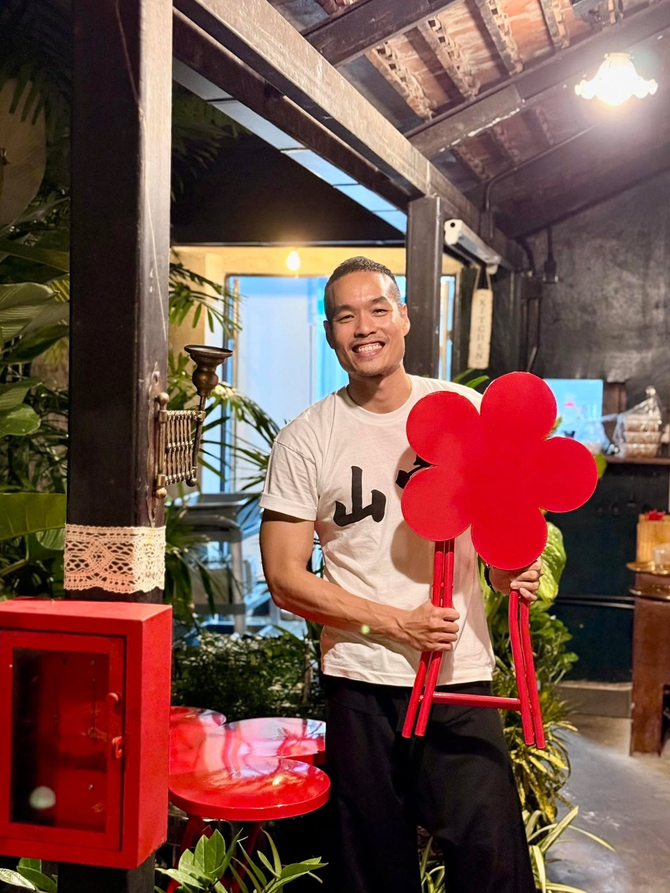

2025 · award · event
Toh Daeng earns MICHELIN recognition for a sixth straight year

Original text in Thai
รางวัล Michelin 2026 🎉 - 6 ปีซ้อน 😇❤️
ขอบคุณทีม Michelin ที่ยังมอบโอกาสให้ร้านโต๊ะแดงภูเก็ต สัญญาตั้งใจให้บริการ และรักษาคุณภาพทั้ง 2 สาขาอย่างดีที่สุดนะครับ 🥰
มีเรื่องให้ตื่นเต้นนน ปกติแบบสอบถาม michelin จะเข้าราวช่วงกลางปี นี้ก้อแปลกใจทำไมปีนี้ถึงยังไม่ได้อีเมลซักที หรือจะอดรางวัลแล้ว 😭
เลยตั้งใจเข้าไปรื้อ email เก่าๆ ย้อนหลัง ว่ามีตกหล่นไปบ้างมั้ย สรุปเจอ!!! 🙏✨ รีบส่ง email ขอโทษทีมงานที่ตอบกลับล่าช้า ได้มีโอกาสเล่าถึงความตั้งใจเปิดสาขาใหม่ในเมืองเพิ่ม ในบ้านเตี้ยมหล่ายเสาโย้ฝั่งคุณแม่อายุกว่า 110 ปีแล้ว กลิ่นอายโต๊ะแดงแบบจัดเต็ม ตั้งใจทำทั้งอาหาร บริการ และเล่าเรื่องราวอย่างดีที่สุด สำคัญคือช่วยชุมชนเช่นเดิม ❤️
ผ่านมาวันนี้โต๊ะแดง สาขาบ้านอาจ้อ เข้าปีที่ 8 สาขาในเมืองเก่าภูเก็ต เข้าเดือนที่ 3 ทััง 2 แห่งมาไกลเกินฝันจริงๆ ขอบคุณทีมงาน และลูกค้าทุกคนนะครับ ❤️
#longdaengPhuket 🧧
#tohdaengPhuket 🧧
#บ้านอาจ้อ ❤️